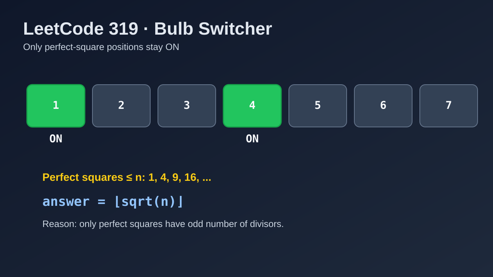

LeetCode 319: Bulb Switcher (Perfect Squares Insight)
LeetCode 319MathNumber TheoryToday we solve LeetCode 319 - Bulb Switcher.
Source: https://leetcode.com/problems/bulb-switcher/

English
Problem Summary
There are n bulbs initially off. In round i, you toggle every i-th bulb. After n rounds, return how many bulbs are on.
Key Insight
Bulb k is toggled once per divisor of k. Most divisors come in pairs (d, k/d), contributing an even number of toggles. Only perfect squares have one unpaired divisor (like sqrt(k)), so only perfect-square indices stay on.
Algorithm
The number of perfect squares in [1..n] is exactly floor(sqrt(n)), so the answer is (int)Math.sqrt(n) (or language equivalent).
Complexity Analysis
Time: O(1).
Space: O(1).
Reference Implementations (Java / Go / C++ / Python / JavaScript)
class Solution {
public int bulbSwitch(int n) {
return (int) Math.sqrt(n);
}
}import "math"
func bulbSwitch(n int) int {
return int(math.Sqrt(float64(n)))
}class Solution {
public:
int bulbSwitch(int n) {
return static_cast<int>(sqrt(n));
}
};class Solution:
def bulbSwitch(self, n: int) -> int:
return int(n ** 0.5)var bulbSwitch = function(n) {
return Math.floor(Math.sqrt(n));
};中文
题目概述
有 n 个灯泡，初始全灭。第 i 轮会切换所有编号为 i 的倍数的灯泡。进行 n 轮后，问有多少灯泡是亮的。
核心思路
编号为 k 的灯泡会被切换“约数个”次数。一般约数成对出现：d 与 k/d，因此总次数通常是偶数，最后熄灭。只有完全平方数会出现一个“成对失败”的约数（平方根），导致切换次数为奇数，最后点亮。
算法
1..n 中完全平方数的个数就是 floor(sqrt(n))，直接返回该值即可。
复杂度分析
时间复杂度：O(1)。
空间复杂度：O(1)。
多语言参考实现（Java / Go / C++ / Python / JavaScript）
class Solution {
public int bulbSwitch(int n) {
return (int) Math.sqrt(n);
}
}import "math"
func bulbSwitch(n int) int {
return int(math.Sqrt(float64(n)))
}class Solution {
public:
int bulbSwitch(int n) {
return static_cast<int>(sqrt(n));
}
};class Solution:
def bulbSwitch(self, n: int) -> int:
return int(n ** 0.5)var bulbSwitch = function(n) {
return Math.floor(Math.sqrt(n));
};
Comments